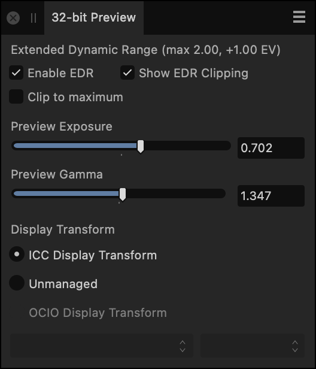
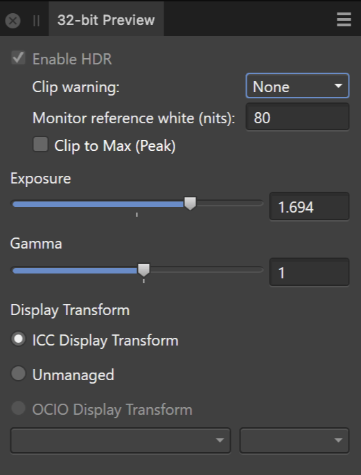

The 32-bit Preview panel provides configurable exposure and gamma controls to preview the vast tonal range of a 32-bit document without tonally modifying it. This is especially useful for floating point lossless workflows (e.g., 3D rendering), where edits need to be made to the image without sacrificing the available tonal range through tonal compression or adjustments.
About the 32-bit Preview panel
EDR (Extended Dynamic Range) mode is supported which is designed for HDR content creation.
EDR-compatible displays
For these displays, enabling EDR display support will switch the operating system into a mode whereby it will increase the backlight intensity and darken screen content—increasing the dynamic range available when rendering content in your 32-bit document.
A settings option will automatically enable EDR display support when viewing 32-bit documents.

32-bit Preview panel set up for EDR-compatible displays
HDR (High Dynamic Range) mode is supported which is designed for HDR content creation.
HDR-compatible displays
For these displays, enabling HDR display support will switch the operating system into a mode whereby it will increase the backlight intensity and darken screen content—increasing the dynamic range available when rendering content in your 32-bit document.
A settings option will automatically enable HDR display support when viewing 32-bit documents.

32-bit Preview panel set up for HDR-compatible displays
The panel options include:
Enable EDR—enables Extended Dynamic Range mode to allow peak brightness values greater than diffuse/paper white to be displayed, increasing the dynamic range of the document view.
Enable HDR—enables High Dynamic Range mode to allow peak brightness values greater than diffuse/paper white to be displayed, increasing the dynamic range of the document view.
Show EDR Clipping—displays over-exposed areas while in EDR mode. These are areas outside of the peak brightness value that the display is capable of (e.g. 1000 nits).
Clip warning—displays over-exposed areas while in HDR mode. Choose between average or peak brightness, measured in nits. These values are obtained from the display's metadata.
Monitor reference white (nits)—used in conjunction with clipping. Set this value to the diffuse/paper white brightness value you have calibrated your display to (if using a profiling device, this may be measured in cd/m2 which is equal to nits). This ensures accurate clipping information is displayed.
Clip to maximum—prevents the display from tone mapping while in EDR mode. Ordinarily, the display will tone map brightness values above its peak brightness threshold, but with this option enabled those values will instead be clipped.
Clip to Max (Peak)—prevents the display from tone mapping while in HDR mode. Ordinarily, the display will tone map brightness values above its peak brightness threshold, but with this option enabled those values will instead be clipped.
Preview Exposure—increases or decreases the preview exposure of the image, allowing you to better visualize the highlight or shadow tonal ranges for editing.
Preview Gamma—alters the gamma correction value.
Display Transform—allows you to switch between a non-linear view using the current display profile, linear light or an OCIO transform:
ICC Display Transform—non-linear transform using the current display profile.
Unmanaged—a linear light view where no transform is applied.
OCIO Display Transform—choose a device transform and a view transform to preview your document using OpenColorIO. The options presented for both pop-up menus will differ depending on your current OpenColorIO configuration.